Grupo de Estudios Botánicos GEOBOTA
Universidad de Antioquia
Biología de las Plantas (2025-2)
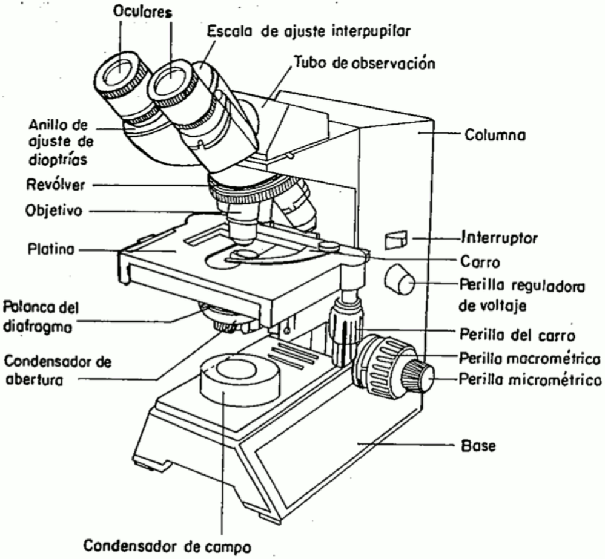
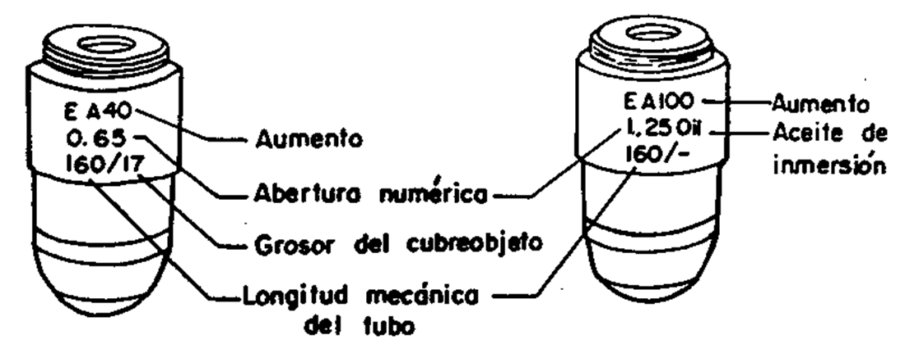
Capacidad que tiene el objetivo para recibir el cono de luz que pasa a través de la muestra, procedente de la fuente de luz. La abertura numérica es directamente proporcional al índice de refracción del medio en que se propaga la luz (aire, agua, vidrio, aceite de inmersión), pues mientras mayor sea el índice de refracción, mayor será el cono de luz, lo cual origina un mayor poder de resolución.
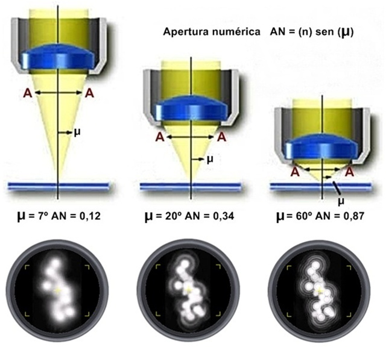
Capacidad que posee un instrumento óptico para diferenciar dos puntos que a simple vista parecen uno solo debido a la pequeña distancia que hay entre ellos. Es caracteŕstico de cada instrumento óptico y depende en gran parte de la luz y de las lentes utilizadas.
\[ R = \lambda / 2AN \]
\(\lambda:\) longitud de onda (640 nm)
| Objetivo | nm | µm |
|---|---|---|
| 4X | 3200 | 3.2 |
| 10X | 1280 | 1.28 |
| 40X | 492.3 | 0.49 |
| 100X | 245.1 | 0.25 |
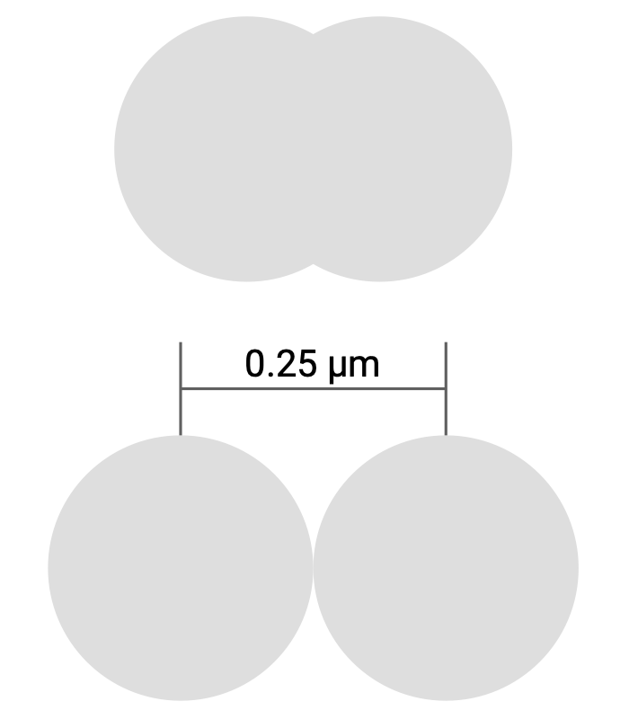
Capacidad que posee un instrumento óptico para producir una imagen aumentada de un objeto.
\[ A_t = A_{oc} \times A_{ob} \]
\(A_t:\) Aumento total
\(A_{oc}:\) Aumento del ocular
\(A_{ob}:\) Aumento del objetivo
| Aumento objetivo | Aumento ocular | Aumento total |
|---|---|---|
| 4X | 10X | 40X |
| 10X | 10X | 100X |
| 40X | 10X | 400X |
| 100X | 10X | 1000X |
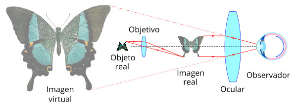
Fig 5: Funcionamiento de un microscopio. mundomicroscopio.com (s. f.).
Área circular que se observa al mirar por los oculares y varía según las lentes utilizadas. El diámetro del campo visual de un microscopio compuesto se calculan dividiendo el valor del número del campo por el aumento del objetivo que se esté utilizando
\[ d = 18L/{A_{ob}} \]
\(A_{ob}:\) aumentos del objetivo
| Objetivo | Diámetro (mm) | Diámetro (µm) | Área (mm2) |
|---|---|---|---|
| 4X | 4.5 | 4500 | 15.90 |
| 10X | 1.8 | 1800 | 2.54 |
| 40X | 0.45 | 450 | 0.16 |
| 100X | 0.18 | 180 | 0.02 |
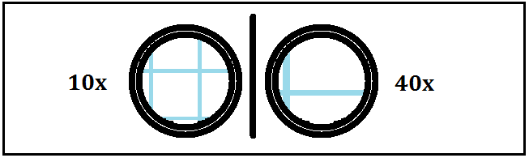
Fig 6: Campo visual del miscrocopio en 10X y 40X. Administrador (2018).
Área del circulo: \(A = \pi r^2\)
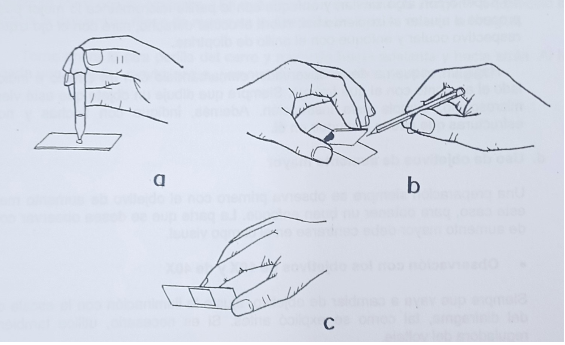
Fig 7: Montaje en fresco.
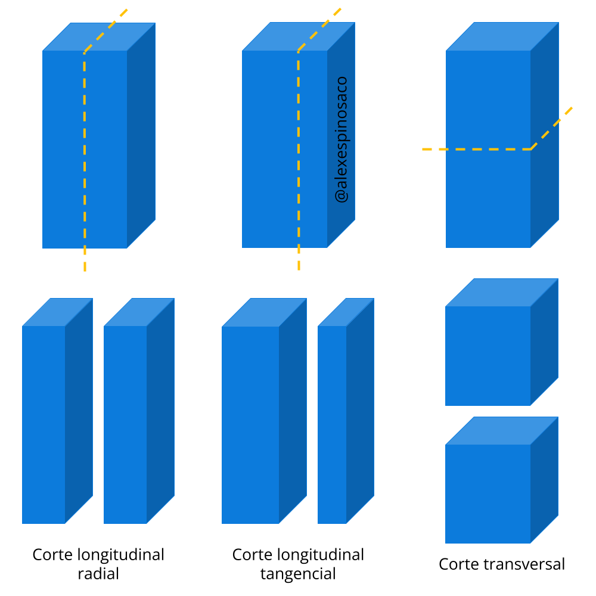
Fig 8: Tipos de corte en botánica.
| Azul de toluidina | Safranina - Azul alcián | |
|---|---|---|
| Pared primaria | Azul a púrpura | Azul |
| Pared secundaria | Verde brillante | Rojo |
| Suberina y cutina | Verde brillante | Rojo |
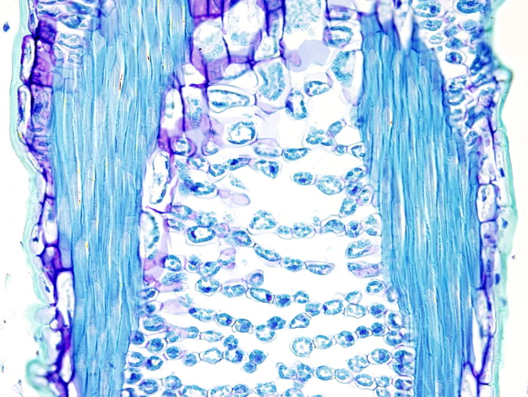
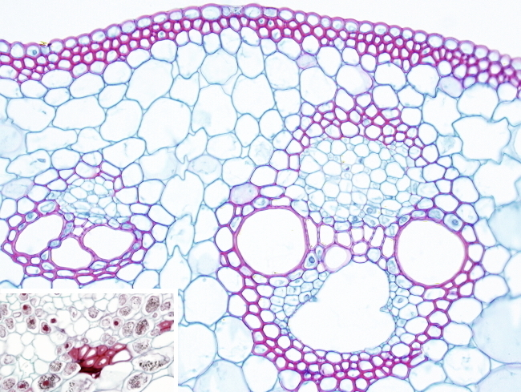
Fotografías de Megías-Pacheco et al. (2017).
Reconocer las partes del miscroscopio asignado
Montaje en fresco con hilos de colores, cabello, granos de polen
Montaje en fresco de letras impresa, papel milimetrado
Cortes colroeados y sin colorear de flores y hojas de Tradescantia pallida, flores de Hemerocallis sp., tallos de Aristolochia ringens, tallos de Bidens pilosa y hojas de Ficus elastica
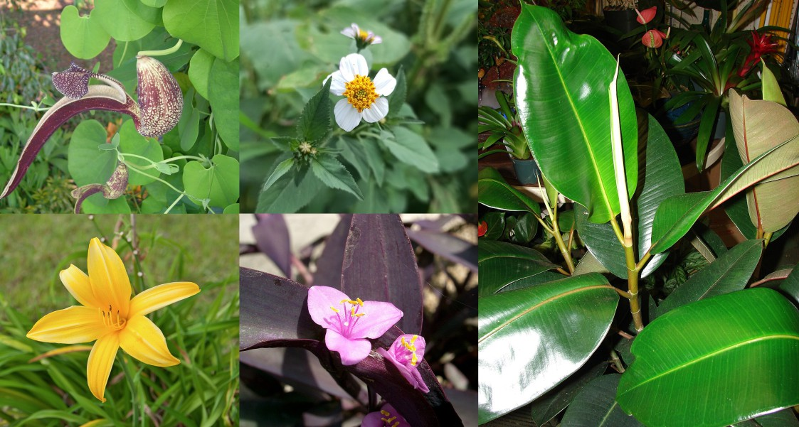
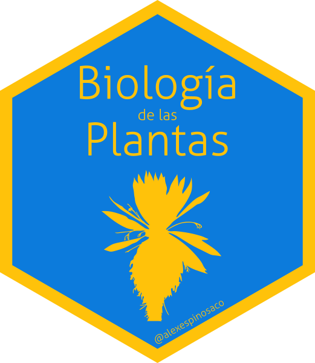